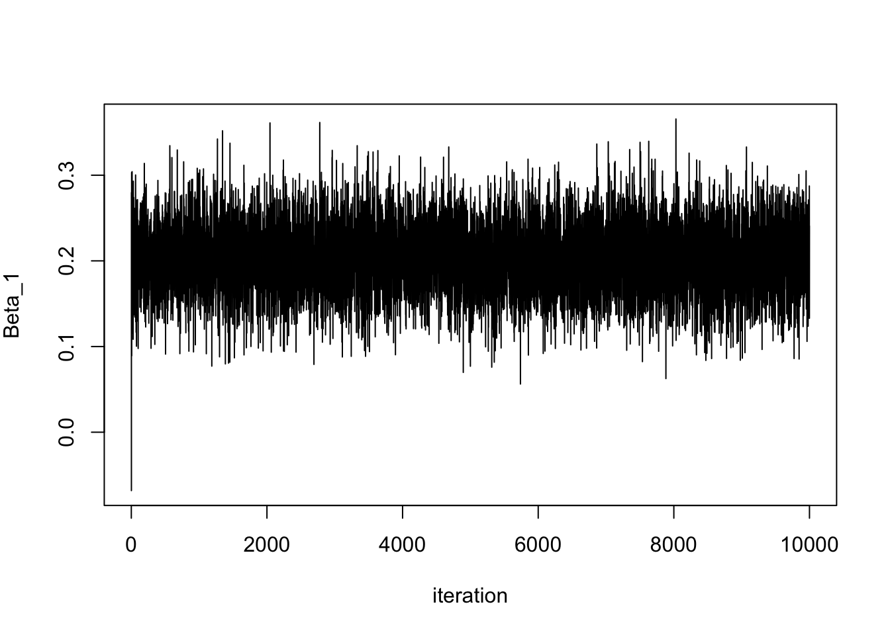
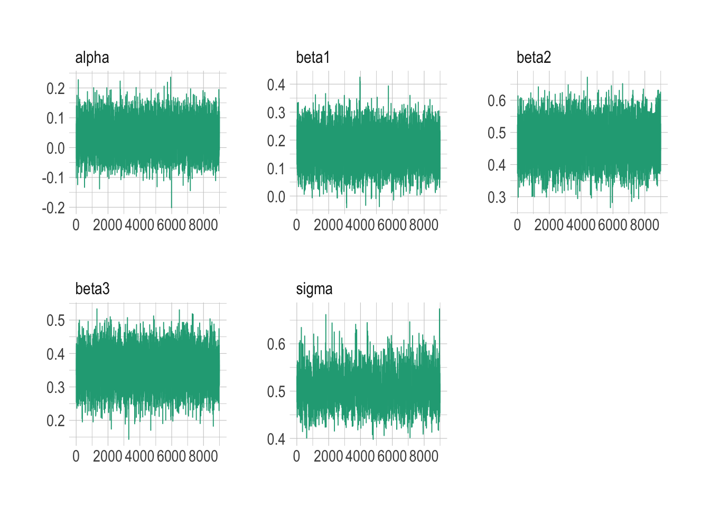
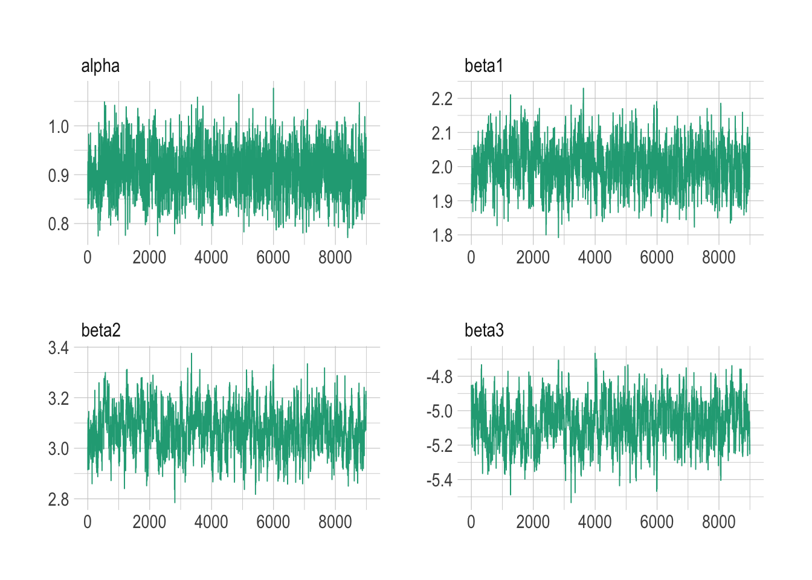
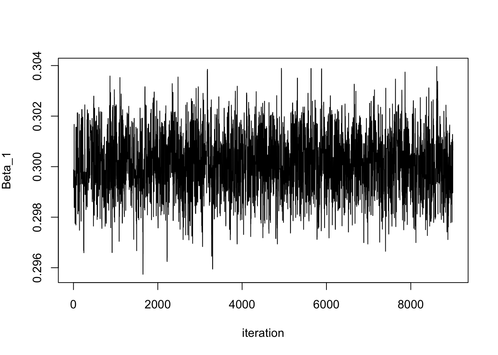

set.seed(1)
p <- 3 # number of explanatory variables
n <- 100 # number of observations
X <- matrix(round(rnorm(p * n), 2), nrow = n, ncol = p) # explanatory variables
true_betas <- c(c(0.2, 0.5, 0.3)) # coefficients
sigma <- 0.5
y <- rnorm(n, X %*% true_betas, sigma)Introduction to Bayesian Methods
SHARP Bayesian Modeling for Environmental Health Workshop
Load packages
Goal of this computing lab session
This lab will involve taking some concepts from the lectures and introduce you to the way NIMBLE works.
Introduction to NIMBLE format.
NIMBLE is written in a slightly unusual format if you’re used to just using R. It is written in the style of a program called BUGS, which came out a few decades ago and was developed at Imperial College London.
First basic examples of NIMBLE and how to use it.
These examples will be for basic regression models using linear predictors
Adapted from https://r-nimble.org/examples
Normal-Normal example.
The first example will utilize a simple regression
First create some example data for our model:
\[ y = max + c \]
What does the dataset look like?
df <- tibble(y = y, x1 = X[,1], x2 = X[,2], x3 = X[,3])
df# A tibble: 100 × 4
y x1 x2 x3
<dbl> <dbl> <dbl> <dbl>
1 0.134 -0.63 -0.62 0.41
2 0.0394 0.18 0.04 1.69
3 0.840 -0.84 -0.91 1.59
4 0.109 1.6 0.16 -0.33
5 -0.119 0.33 -0.65 -2.29
6 2.23 -0.82 1.77 2.5
7 0.700 0.49 0.72 0.67
8 1.05 0.74 0.91 0.54
9 -0.209 0.58 0.38 -0.01
10 1.09 -0.31 1.68 0.51
# ℹ 90 more rowsWhat does equivalent frequentist model output look like for reference? What’s the interpretation of the 95% CI?
model_freq <- lm(
y ~ x1 + x2 + x3,
data = df
)
central_est <- t(t(model_freq$coefficients))
conf_int <- confint(model_freq)
cbind(central_est, conf_int) 2.5 % 97.5 %
(Intercept) 0.02637957 -0.07351032 0.1262695
x1 0.17094550 0.06003795 0.2818530
x2 0.47246402 0.36845075 0.5764773
x3 0.35246949 0.25613504 0.4488039Create the NIMBLE model
code <- nimbleCode({
# priors for parameters
alpha ~ dnorm(0, sd = 100) # prior for alpha
beta1 ~ dnorm(0, sd = 100) # prior for beta1
beta2 ~ dnorm(0, sd = 100) # prior for beta2
beta3 ~ dnorm(0, sd = 100) # prior for beta3
sigma ~ dunif(0, 100) # prior for variance components
# regression formula
for(i in 1:n) {
mu[i] <- alpha + beta1 * x1[i] + beta2 * x2[i] + beta3 * x3[i] # manual entry of linear predictors
y[i] ~ dnorm(mu[i], sd = sigma)
}
})Before running NIMBLE, extract data for three predictors and center around zero for better MCMC performance
x1 <- X[,1] - mean(X[,1])
x2 <- X[,2] - mean(X[,2])
x3 <- X[,3] - mean(X[,3])Final preparation of data into lists
constants <- list(n = n)
data <- list(y = y, x1 = x1, x2 = x2, x3 = x3)Set initial values for MCMC samples
inits <- list(beta0 = mean(y), alpha = 0, beta2 = 0, beta3 = 0, sigma = 1)The following code will establish which samples will be used in the sampling of the posteriors. If there is a conjugate relationship apparent between prior and posterior (e.g., Normal-Normal, Binomial-Beta, Poisson-Gamma), it will be detected here
model <- nimbleModel(code, constants = constants, data = data, inits = inits)Defining modelBuilding modelSetting data and initial values [Note] 'beta0' has initial values but is not a variable in the model and is being ignored.Running calculate on model
[Note] Any error reports that follow may simply reflect missing values in model variables.Checking model sizes and dimensions [Note] This model is not fully initialized. This is not an error.
To see which variables are not initialized, use model$initializeInfo().
For more information on model initialization, see help(modelInitialization).mcmcConf <- configureMCMC(model)===== Monitors =====
thin = 1: alpha, beta1, beta2, beta3, sigma
===== Samplers =====
RW sampler (1)
- sigma
conjugate sampler (4)
- alpha
- beta1
- beta2
- beta3Run the MCMC simulations
t0 = Sys.time()
nimbleMCMC_samples_initial <- nimbleMCMC(
code = code,
data = data,
constants = constants,
inits = inits,
niter = 10000, # run 10000 samples
setSeed = 1,
samplesAsCodaMCMC = TRUE
)Defining modelBuilding modelSetting data and initial values [Note] 'beta0' has initial values but is not a variable in the model and is being ignored.Running calculate on model
[Note] Any error reports that follow may simply reflect missing values in model variables.Checking model sizes and dimensions [Note] This model is not fully initialized. This is not an error.
To see which variables are not initialized, use model$initializeInfo().
For more information on model initialization, see help(modelInitialization).Checking model calculations[Note] NAs were detected in model variables: beta1, logProb_beta1, mu, logProb_y.Compiling
[Note] This may take a minute.
[Note] Use 'showCompilerOutput = TRUE' to see C++ compilation details.running chain 1... [Note] 'beta0' has initial values but is not a variable in the model and is being ignored.|-------------|-------------|-------------|-------------|
|-------------------------------------------------------|t1 = Sys.time()
t1 - t0Time difference of 8.939417 secsWhat is the summary of each estimated parameter from the samples?
summarise_draws(nimbleMCMC_samples_initial, default_summary_measures())# A tibble: 5 × 7
variable mean median sd mad q5 q95
<chr> <num> <num> <num> <num> <num> <num>
1 alpha 0.0379 0.0379 0.0504 0.0501 -0.0465 0.119
2 beta1 0.170 0.171 0.0569 0.0561 0.0773 0.264
3 beta2 0.472 0.473 0.0538 0.0533 0.381 0.559
4 beta3 0.352 0.353 0.0494 0.0489 0.271 0.433
5 sigma 0.507 0.504 0.0402 0.0374 0.448 0.572summarise_draws(nimbleMCMC_samples_initial, default_convergence_measures())# A tibble: 5 × 4
variable rhat ess_bulk ess_tail
<chr> <num> <num> <num>
1 alpha 1.00 10059. 9666.
2 beta1 1.00 10161. 9755.
3 beta2 1.00 9774. 9569.
4 beta3 1.00 10388. 9496.
5 sigma 1.00 1712. 1508.What do the samples of one of the unknown parameters actually look like? Let’s have a look at beta1 (which we know is 0.2)
mcmc_trace(nimbleMCMC_samples_initial)
So it looks like the samples are converging quickly from the initial parameter to ~0.2. But typically we will throw some samples at the beginning to ensure that the transient samples (which is when the model samples haven’t stabilized around a particular value) are not included in calculating estimates of the mean and credible intervals. This is called the ‘burn in’ or ‘warm up period’.
Let’s do it again but with a burn in of 1000 samples.
t0 = Sys.time()
nimbleMCMC_samples_burnin <- nimbleMCMC(
code = code,
data = data,
constants = constants,
inits = inits,
niter = 10000, # collect 10000 samples
nburnin = 1000, # burn in for 1000 iterations
setSeed = 1,
samplesAsCodaMCMC = TRUE
)Defining modelBuilding modelSetting data and initial values [Note] 'beta0' has initial values but is not a variable in the model and is being ignored.Running calculate on model
[Note] Any error reports that follow may simply reflect missing values in model variables.Checking model sizes and dimensions [Note] This model is not fully initialized. This is not an error.
To see which variables are not initialized, use model$initializeInfo().
For more information on model initialization, see help(modelInitialization).Checking model calculations[Note] NAs were detected in model variables: beta1, logProb_beta1, mu, logProb_y.Compiling
[Note] This may take a minute.
[Note] Use 'showCompilerOutput = TRUE' to see C++ compilation details.running chain 1... [Note] 'beta0' has initial values but is not a variable in the model and is being ignored.|-------------|-------------|-------------|-------------|
|-------------------------------------------------------|t1 = Sys.time()
t1 - t0Time difference of 7.420112 secsWhat is the summary of each estimated parameter from the samples with burn in?
summarise_draws(nimbleMCMC_samples_burnin, default_summary_measures())# A tibble: 5 × 7
variable mean median sd mad q5 q95
<chr> <num> <num> <num> <num> <num> <num>
1 alpha 0.0377 0.0377 0.0504 0.0501 -0.0465 0.119
2 beta1 0.170 0.171 0.0569 0.0562 0.0776 0.264
3 beta2 0.472 0.472 0.0537 0.0533 0.381 0.559
4 beta3 0.352 0.352 0.0493 0.0487 0.271 0.433
5 sigma 0.506 0.504 0.0370 0.0371 0.449 0.569Now the samples look to be very tidily centred around 0.2.
mcmc_trace(nimbleMCMC_samples_burnin)
What’s the influence of tighter priors?
code_tighter_priors <- nimbleCode({
# priors for parameters
alpha ~ dnorm(0, sd = 1) # prior for alpha
beta1 ~ dnorm(0, sd = 1) # prior for beta1
beta2 ~ dnorm(0, sd = 1) # prior for beta2
beta3 ~ dnorm(0, sd = 1) # prior for beta3
sigma ~ dunif(0, 1) # prior for variance components
# regression formula
for(i in 1:n) {
mu[i] <- alpha + beta1*x1[i] + beta2*x2[i] + beta3*x3[i] # manual entry of linear predictors
y[i] ~ dnorm(mu[i], sd = sigma)
}
})Run the MCMC simulations
t0 = Sys.time()
nimbleMCMC_samples_tighter_priors <- nimbleMCMC(
code = code_tighter_priors,
data = data,
constants = constants,
inits = inits,
niter = 10000,
nburnin = 1000,
setSeed = 1,
samplesAsCodaMCMC = TRUE
)Defining modelBuilding modelSetting data and initial values [Note] 'beta0' has initial values but is not a variable in the model and is being ignored.Running calculate on model
[Note] Any error reports that follow may simply reflect missing values in model variables.Checking model sizes and dimensions [Note] This model is not fully initialized. This is not an error.
To see which variables are not initialized, use model$initializeInfo().
For more information on model initialization, see help(modelInitialization).Checking model calculations[Note] NAs were detected in model variables: beta1, logProb_beta1, mu, logProb_y.Compiling
[Note] This may take a minute.
[Note] Use 'showCompilerOutput = TRUE' to see C++ compilation details.running chain 1... [Note] 'beta0' has initial values but is not a variable in the model and is being ignored.|-------------|-------------|-------------|-------------|
|-------------------------------------------------------|t1 = Sys.time()
t1 - t0Time difference of 7.07336 secsWhat is the summary of each estimated parameter from the samples with tighter priors?
summarise_draws(nimbleMCMC_samples_tighter_priors, default_summary_measures())# A tibble: 5 × 7
variable mean median sd mad q5 q95
<chr> <num> <num> <num> <num> <num> <num>
1 alpha 0.0372 0.0377 0.0510 0.0507 -0.0471 0.121
2 beta1 0.169 0.169 0.0569 0.0561 0.0761 0.263
3 beta2 0.471 0.472 0.0530 0.0532 0.384 0.556
4 beta3 0.350 0.350 0.0496 0.0496 0.269 0.433
5 sigma 0.507 0.506 0.0367 0.0364 0.449 0.571Say we wanted to establish the estimated difference between two betas? Let’s say beta_1 and beta_2 in this case
code_diff_betas <- nimbleCode({
# priors for parameters
alpha ~ dnorm(0, sd = 100) # prior for alpha
beta1 ~ dnorm(0, sd = 100) # prior for beta1
beta2 ~ dnorm(0, sd = 100) # prior for beta2
beta3 ~ dnorm(0, sd = 100) # prior for beta3
sigma ~ dunif(0, 100) # prior for variance components
# regression formula
for(i in 1:n) {
mu[i] <- alpha + beta1*x1[i] + beta2*x2[i] + beta3*x3[i]
y[i] ~ dnorm(mu[i], sd = sigma)
}
# difference between beta1 and beta2
beta12_diff <- beta2 - beta1
})Run the MCMC simulations for monitoring specifically differences between beta1 and beta2
parameters_to_monitor = c('beta12_diff')
t0 = Sys.time()
nimbleMCMC_samples_beta12_diff = nimbleMCMC(
code = code_diff_betas,
data = data,
constants = constants,
inits = inits,
monitors = parameters_to_monitor,
niter = 10000,
nburnin = 1000,
setSeed = 1,
samplesAsCodaMCMC = TRUE
)Defining modelBuilding modelSetting data and initial values [Note] 'beta0' has initial values but is not a variable in the model and is being ignored.Running calculate on model
[Note] Any error reports that follow may simply reflect missing values in model variables.Checking model sizes and dimensions [Note] This model is not fully initialized. This is not an error.
To see which variables are not initialized, use model$initializeInfo().
For more information on model initialization, see help(modelInitialization).Checking model calculations[Note] NAs were detected in model variables: beta1, logProb_beta1, beta12_diff, mu, logProb_y.Compiling
[Note] This may take a minute.
[Note] Use 'showCompilerOutput = TRUE' to see C++ compilation details.running chain 1... [Note] 'beta0' has initial values but is not a variable in the model and is being ignored.|-------------|-------------|-------------|-------------|
|-------------------------------------------------------|t1 = Sys.time()
t1 - t0Time difference of 7.136758 secsWhat is the summary of each estimated parameter from the samples when monitoring difference between beta1 and beta2?
summarise_draws(nimbleMCMC_samples_beta12_diff, default_summary_measures())# A tibble: 1 × 7
variable mean median sd mad q5 q95
<chr> <num> <num> <num> <num> <num> <num>
1 beta12_diff 0.301 0.302 0.0786 0.0781 0.171 0.430Equally, we could do this by operating on the samples themselves from the original model.
(nimbleMCMC_samples_burnin[, "beta2"] - nimbleMCMC_samples_burnin[, "beta1"]) |> as.numeric() |> summary() Min. 1st Qu. Median Mean 3rd Qu. Max.
0.02122 0.24882 0.30182 0.30117 0.35393 0.59525 Logistic regression example.
First create some example data for our model:
\[ y = max + c \]
n <- 10000
p <- 3
set.seed(1)
x1 <- round(rnorm(n), 2)
x2 <- round(rnorm(n), 2)
x3 <- round(rnorm(n), 2)
z <- 1 + 2 * x1 + 3 * x2 - 5 * x3 # linear combination with a bias
pr <- 1 / (1 + exp(-z)) # pass through an inv-logit function
y <- rbinom(n, 1, pr) # bernoulli response variableWhat does the dataset look like?
df <- tibble(y = y, x1 = x1, x2 = x2, x3 = x3)
df# A tibble: 10,000 × 4
y x1 x2 x3
<int> <dbl> <dbl> <dbl>
1 0 -0.63 -0.8 0.24
2 0 0.18 -1.06 0.24
3 1 -0.84 -1.04 -0.64
4 1 1.6 -1.19 -1.93
5 0 0.33 -0.5 1.04
6 0 -0.82 -0.52 -0.28
7 1 0.49 -0.3 -1.41
8 0 0.74 0.47 0.72
9 0 0.58 -0.25 2.03
10 1 -0.31 1.26 0.73
# ℹ 9,990 more rowsWhat does equivalent frequentist model output look like for reference? What’s the interpretation of the 95% CI?
# now feed it to glm:
model_freq = glm(
y ~ x1 + x2 + x3,
family = "binomial",
data = df
)
central_est = t(t(model_freq$coefficients))
conf_int = confint(model_freq)Waiting for profiling to be done...cbind(central_est, conf_int) 2.5 % 97.5 %
(Intercept) 0.9708841 0.8815055 1.062135
x1 1.9996467 1.8804927 2.122818
x2 3.0673555 2.9106508 3.230181
x3 -5.0590851 -5.3043405 -4.823787Create the NIMBLE model
code_binomial <- nimbleCode({
# priors for parameters
alpha ~ dnorm(0, sd = 100) # prior for alpha
beta1 ~ dnorm(0, sd = 100) # prior for beta1
beta2 ~ dnorm(0, sd = 100) # prior for beta2
beta3 ~ dnorm(0, sd = 100) # prior for beta3
# regression formula
for(i in 1:n) {
y[i] ~ dbin(p[i], 1)
logit(p[i]) <- alpha + beta1 * x1[i] + beta2 * x2[i] + beta3 * x3[i]
}
})Before running NIMBLE, extract data for three predictors and center around zero for better MCMC performance
x1 <- x1 - mean(x1)
x2 <- x2 - mean(x2)
x3 <- x3 - mean(x3)Final preparation of data into lists
constants <- list(n = n)
data <- list(y = y, x1 = x1, x2 = x2, x3 = x3)Set initial values for MCMC samples
inits <- list(alpha = 0, beta1 = 0, beta2 = 0, beta3 = 0)The following code will establish which samples will be used in the sampling of the posteriors. If there is a conjugate relationship apparent between prior and posterior (e.g., Normal-Normal, Binomial-Beta, Poisson-Gamma), it will be detected here
model_binomial <- nimbleModel(code_binomial, constants = constants, data = data, inits = inits)Defining modelBuilding modelSetting data and initial valuesRunning calculate on model
[Note] Any error reports that follow may simply reflect missing values in model variables.Checking model sizes and dimensionsmcmcConf <- configureMCMC(model_binomial)===== Monitors =====
thin = 1: alpha, beta1, beta2, beta3
===== Samplers =====
RW sampler (4)
- alpha
- beta1
- beta2
- beta3Let’s run the model.
t0 = Sys.time()
nimbleMCMC_samples_binomial <- nimbleMCMC(
code = code_binomial,
data = data,
constants = constants,
inits = inits,
niter = 10000,
nburnin = 1000,
setSeed = 1,
samplesAsCodaMCMC = TRUE
)Defining modelBuilding modelSetting data and initial valuesRunning calculate on model
[Note] Any error reports that follow may simply reflect missing values in model variables.Checking model sizes and dimensionsChecking model calculationsCompiling
[Note] This may take a minute.
[Note] Use 'showCompilerOutput = TRUE' to see C++ compilation details.running chain 1...|-------------|-------------|-------------|-------------|
|-------------------------------------------------------|t1 = Sys.time()
t1 - t0Time difference of 39.42048 secsWhat is the summary of each estimated parameter from the binomial model?
summarise_draws(nimbleMCMC_samples_binomial, default_summary_measures())# A tibble: 4 × 7
variable mean median sd mad q5 q95
<chr> <num> <num> <num> <num> <num> <num>
1 alpha 0.908 0.909 0.0450 0.0447 0.833 0.982
2 beta1 2.00 2.00 0.0620 0.0622 1.90 2.11
3 beta2 3.07 3.07 0.0836 0.0851 2.94 3.21
4 beta3 -5.07 -5.07 0.124 0.131 -5.27 -4.87 summarise_draws(nimbleMCMC_samples_binomial, default_convergence_measures())# A tibble: 4 × 4
variable rhat ess_bulk ess_tail
<chr> <num> <num> <num>
1 alpha 1.00 764. 1545.
2 beta1 1.00 343. 1101.
3 beta2 1.00 278. 837.
4 beta3 1.00 255. 853.Now the samples look to be very tidily centered around 2.
mcmc_trace(nimbleMCMC_samples_binomial)
Poisson-Gamma example.
First create some example data for our model:
\[ y = max + c \]
n = 10000
set.seed(1)
x1 <- round(rnorm(n), 2)
x2 <- round(rnorm(n), 2)
x3 <- round(rnorm(n), 2)
z = 4 + 0.3 * x1 - 0.1 * x2 + 0.6 * x3
lambda = exp(z)
y = rpois(n, lambda)What does the dataset look like?
df <- tibble(y = y, x1 = x1, x2 = x2, x3 = x3)
df# A tibble: 10,000 × 4
y x1 x2 x3
<int> <dbl> <dbl> <dbl>
1 61 -0.63 -0.8 0.24
2 81 0.18 -1.06 0.24
3 29 -0.84 -1.04 -0.64
4 39 1.6 -1.19 -1.93
5 113 0.33 -0.5 1.04
6 43 -0.82 -0.52 -0.28
7 32 0.49 -0.3 -1.41
8 106 0.74 0.47 0.72
9 208 0.58 -0.25 2.03
10 70 -0.31 1.26 0.73
# ℹ 9,990 more rowsWhat does equivalent frequentist model output look like for reference? What’s the interpretation of the 95% CI?
# now feed it to glm:
model_freq = glm(
y ~ x1 + x2 + x3,
family = "poisson",
data = df
)
central_est = t(t(model_freq$coefficients))
conf_int = confint(model_freq)Waiting for profiling to be done...cbind(central_est, conf_int) 2.5 % 97.5 %
(Intercept) 3.99983512 3.9969693 4.00269787
x1 0.30008642 0.2977384 0.30243455
x2 -0.09972148 -0.1021164 -0.09732667
x3 0.60080907 0.5984493 0.60316886Create the NIMBLE model
code_poisson <- nimbleCode({
# priors for parameters
alpha ~ dnorm(0, sd = 100) # prior for alpha
beta1 ~ dnorm(0, sd = 100) # prior for beta1
beta2 ~ dnorm(0, sd = 100) # prior for beta2
beta3 ~ dnorm(0, sd = 100) # prior for beta3
# regression formula
for(i in 1:n) {
y[i] ~ dpois(lambda[i])
log(lambda[i]) <- alpha + beta1 * x1[i] + beta2 * x2[i] + beta3 * x3[i]
}
})Before running NIMBLE, extract data for three predictors and center around zero for better MCMC performance
x1 <- x1 - mean(x1)
x2 <- x2 - mean(x2)
x3 <- x3 - mean(x3)Final preparation of data into lists
constants <- list(n = n)
data <- list(y = y, x1 = x1, x2 = x2, x3 = x3)Set initial values for MCMC samples
inits <- list(alpha = 0, beta1 = 0, beta2 = 0, beta3 = 0)The following code will establish which samples will be used in the sampling of the posteriors. If there is a conjugate relationship apparent between prior and posterior (e.g., Normal-Normal, Binomial-Beta, Poisson-Gamma), it will be detected here
model_poisson <- nimbleModel(code_poisson, constants = constants, data = data, inits = inits)Defining modelBuilding modelSetting data and initial valuesRunning calculate on model
[Note] Any error reports that follow may simply reflect missing values in model variables.Checking model sizes and dimensionsmcmcConf <- configureMCMC(model_poisson)===== Monitors =====
thin = 1: alpha, beta1, beta2, beta3
===== Samplers =====
RW sampler (4)
- alpha
- beta1
- beta2
- beta3Let’s run the model.
t0 = Sys.time()
nimbleMCMC_samples_poisson <- nimbleMCMC(
code = code_poisson,
data = data,
constants = constants,
inits = inits,
niter = 10000,
nburnin = 1000,
setSeed = 1,
samplesAsCodaMCMC = TRUE
)Defining modelBuilding modelSetting data and initial valuesRunning calculate on model
[Note] Any error reports that follow may simply reflect missing values in model variables.Checking model sizes and dimensionsChecking model calculationsCompiling
[Note] This may take a minute.
[Note] Use 'showCompilerOutput = TRUE' to see C++ compilation details.running chain 1...|-------------|-------------|-------------|-------------|
|-------------------------------------------------------|t1 = Sys.time()
t1 - t0Time difference of 46.29393 secsWhat is the summary of each estimated parameter from the Poisson model?
summarise_draws(nimbleMCMC_samples_poisson, default_summary_measures())# A tibble: 4 × 7
variable mean median sd mad q5 q95
<chr> <num> <num> <num> <num> <num> <num>
1 alpha 4.00 4.00 0.00145 0.00146 4.00 4.01
2 beta1 0.300 0.300 0.00120 0.00120 0.298 0.302
3 beta2 -0.0997 -0.0997 0.00123 0.00124 -0.102 -0.0977
4 beta3 0.601 0.601 0.00124 0.00126 0.599 0.603 summarise_draws(nimbleMCMC_samples_poisson, default_convergence_measures())# A tibble: 4 × 4
variable rhat ess_bulk ess_tail
<chr> <num> <num> <num>
1 alpha 1.00 834. 1498.
2 beta1 1.00 1358. 1905.
3 beta2 1.00 1979. 2125.
4 beta3 1.00 1075. 1632.Now the samples look to be very tidily centred around 0.3.
mcmc_trace(nimbleMCMC_samples_poisson)